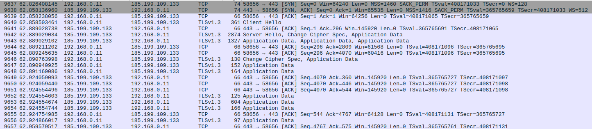

Secure gRPC services with mTLS
Introduction
Authentication is part of the AAA (Authn, Authz, Audit) security framework, and a basic functionality for each multi tenant modern system, the usage of gRPC as a channel of communication for east-west trafic allow the developer to enable built-in mechanisms capable to not only secure the traffic via TLS encryption but to enable authentication using SSL/TLS X.509 certificates.
This post will detail and demonstrate a client/server implementation that uses gRPC as a protocol of communication
and uses these TLS certificates for channels credentials. Projects like cert-manager, a CNCF project, can be used for PKI management
inside Kubernetes clusters if you are using container workload in production.
TLS and SSL
Starting with SSL (Secure Socket Layer), its a standard/deprecated technology used for establish an encrypted link between server/clients, is 2015 it was deprecated in favor of TLS (now on 1.3) version.
Demystifing Cryptography w/ OpenSSL 3.0 is a very good book in the topic and brings details in the difference of Symmetric cryptography ciphers used for strong message digests, message authentication codes, and generating symmetric cryptograpic keys from password. On the other hand there’re asymmetric ciphers used to generate public/private encryption keys, digital signature, verification and x509, there’ll be another subsection explaining how these ciphers are agreed, communicated and used in TLS.
Public Key Infrastructure
The goal of PKI (Public Key Infrastructure) is the management of public keys and digital certificates on a specific company infrastructure with the intent of identification and access management of the individuals on a secure network.
The common components of this infrastructure are:
- Public/Private key pair
- Registration Authority
- Certificate Authority (CA)
- Certificate Store
- Certificate Revocation List (CRL)
Registration authority is defined as an entity responsible for one or more of the following functions: the identification and authentication of the certificate participants. RA DO not sign or issue certificates. Certificates here are data structures used for identify presentation and verification, X.509 are the format and the core for TLS-based protocols (including software signing and VPN)
The public key system relies on asymmetric cryptography, which consist of a public/private key pair. The CA certifies the ownership of the key pairs through the binding of the public key with the respective identity of the entity. This binding is established thourgh a process of registration and inssuance of certificates at an by the CA. When you sign your own certificate, the certificate is said to be self-signed. self signed.
Browsers for example are developed with a built-in list of trusted roots (called certificate/trust store, operating systems and apps maintain their own list) on a new request they iterate through all certificates in the path (chain of trust) starting with the trust anchor, validating each certificate’s basic information and critical extensions.
The Browsers verifies the certificate’s integrity signature using public-key cryptography, it verifies the validity period time interval, and the Certificate Revocation Lists (CRL) periodically created by the CA. Some other fields like the Issuer and Subject (DNS based) are checked.

TLS Handshake
The client starts with a ClientHello, negotiating the cipher and extensions avaiable, the server chooses the highest protocol version and TLS cipher, the server sends its X.509 certificate, with other certs in the chain, server verifies if the client has a certification to send as well. The server signs a small amount of data received from the client with its own private key (the private pair from the public one in the cert), this way the server proves that it owns the certificate.
At this step the client can send his own certificate for server authentication this is known as mutual tls.
The change cipher spec protocol is used to alter the secret sent between the server and the client and let the other party know that it has generated the session key and is going to switch to encrypted communication.

X.509 certificate
- Signature Algorithm: crypto hash functions and digital signature algo used to sigining.
- Issuer: The entity that signed the current certificate. DN format.
- Subject: The entity that the certificate identifies. DN format.
- Public-Key (2048 bit): The server public key.
❯ openssl x509 -in opssec.in -noout -text
Certificate:
Data:
Version: 3 (0x2)
Serial Number:
03:9e:ec:17:c8:06:7f:8e:1f:5e:ee:99:0a:d0:b0:e7:ab:63
Signature Algorithm: sha256WithRSAEncryption
Issuer: C = US, O = Lets Encrypt, CN = R3
Validity
Not Before: May 13 13:03:08 2023 GMT
Not After : Aug 11 13:03:07 2023 GMT
Subject: CN = opssec.in
Subject Public Key Info:
Public Key Algorithm: rsaEncryption
Public-Key: (2048 bit)
Modulus:
...
Exponent: 65537 (0x10001)
X509v3 extensions:
X509v3 Subject Key Identifier:
63:4E:15:85:56:5A:A4:94:02:C2:16:42:A4:A5:97:9A:38:02:57:97
X509v3 Authority Key Identifier:
14:2E:B3:17:B7:58:56:CB:AE:50:09:40:E6:1F:AF:9D:8B:14:C2:C6
X509v3 Subject Alternative Name:
DNS:opssec.in, DNS:www.opssec.in
CT Precertificate SCTs:
Signed Certificate Timestamp:
Version : v1 (0x0)
Log ID : B7:3E:FB:24:DF:9C:4D:BA:75:F2:39:C5:BA:58:F4:6C:
5D:FC:42:CF:7A:9F:35:C4:9E:1D:09:81:25:ED:B4:99
Timestamp : May 13 14:03:08.122 2023 GMT
Extensions: none
Signature : ecdsa-with-SHA256
30:45:02:21:00:C2:B1:43:FB:E6:F4:2B:43:B9:16:A5:
...
The chain of trust is an ordered collection of certificates, where they are signed, for this certificate in particular Lets Encrypt is has an Intermediate CA (R3) that signs the opssec.in, and is signed by a Root CA (ISRG Root X1).
❯ openssl verify -verbose -show_chain -trusted ./Builtin\ Object\ Token_ISRG\ Root\ X1 -trusted ./R3 ./opssec.in
opssec.in: OK
Chain:
depth=0: CN = opssec.in (untrusted)
depth=1: C = US, O = Lets Encrypt, CN = R3
depth=2: C = US, O = Internet Security Research Group, CN = ISRG Root X1
Generating certificates
The most well known client tool for this task is openssl, these SSL/TLS toolkits are very used
in the CLI for management of keys and certificates, other tools exists like Cloudfare’s PKI and TLS toolkit.
First step is to create the CA certificate, this command generates the private key at the same time.
$ openssl req \
-x509 \
-nodes \
-newkey rsa:4096 \
-days 365 \
-keyout tls/certs/root-keypair.pem \
-out tls/certs/root-cert.pem \
-subj "/CN=Root CA" \
Final Root CA is on tls/certs/root-cert.pem.
You can use mage file and check this project with the target mage tls:genRootCA from knabben/tutorial-istio-sec/1-grpc
Generate the client CSR and certificate under tls/certs/client-cert.pem and tls/certs/client-keypair.pem:
# Client certificate using the CA to sign in
$ openssl req \
-nodes \
-newkey rsa:4096 \
-keyout "tls/certs/client-keypair.pem" \
-out "tls/certs/client-csr.pem" \
-subj "/OU=client,CN=localhost"
$ openssl x509 \
-req \
-in "tls/certs/client-csr.pem" \
-days 60 \
-CAcreateserial \
-CA "tls/certs/root-cert.pem" \
-CAkey "tls/certs/root-keypair.pem" \
-out "tls/certs/client-cert.pem" \
-extfile "./tls/ext.conf"
Generate the server CSR and certificate under tls/certs/server-cert.pem and tls/certs/server-keypair.pem:
# Server CSR
$ openssl req \
-nodes \
-newkey "rsa:4096" \
-keyout "tls/certs/server-keypair.pem" \
-out "tls/certs/server-csr.pem" \
-subj "/OU=server,CN=localhost"
# Server certificate using the CA as well
$ openssl x509 \
-req -in tls/certs/server-csr.pem\
-days 365 \
-CAcreateserial \
-CA "tls/certs/root-cert.pem" \
-CAkey "tls/certs/root-keypair.pem" \
-out "tls/certs/server-cert.pem" \
-extfile" "./tls/ext.conf"
The ext.conf contains an subjectAltName extension for communication since CN hostname check is deprecated
Let the IP as 0.0.0.0 with the content being: subjectAltName=DNS:localhost,IP:0.0.0.0
You can use mage file and check this project with the target mage tls:genClientCert || tls:genServerCert from knabben/tutorial-istio-sec/1-grpc
gRPC
It is a modern high performance Remote Procedure Call (RPC) framework with multiples language support has a simple definition of schema normally made with Protocol Buffers, and uses HTTP/2 as a communication protocol being a good improvement of the HTTP allowing multiplexing requests over a single connection, streaming interations, etc. gRPC is a CNCF accepted project on Inbucation level, and its widely used by CNCF projects.
For this example lets use Protobuf as the schema and underlaying message interchange format between the services, from the official FAQ gRPC largely follows HTTP semantics over HTTP/2 but we explicitly allow for full-duplex streaming. We diverge from typical REST conventions as we use static paths for performance reasons during call dispatch as parsing call parameters from paths, query parameters and payload body adds latency and complexity. We have also formalized a set of errors that we believe are more directly applicable to API use cases than the HTTP status codes.
Mutual TLS
gRPC has SSL/TLs integration and proposes the use of TLS to authenticate the server and to encrypt all data exchange between the client and server. This is a good post about the topic.
For the client side we need to start a new pool of certificates and append the Root CA cert on it,
this is used later in the configuration of the client request. Load the X509 key pair and client certificate
this is passed in the tls.Config, and will be provided to the server as soon it send its own.
var (
rootCA = "./tls/certs/root-cert.pem"
cert = "./tls/certs/client-cert.pem"
keypair = "./tls/certs/client-keypair.pem"
)
func main() {
pool := x509.NewCertPool()
rootBytes, err := os.ReadFile(rootCA)
if err != nil {
return nil, err
}
if !pool.AppendCertsFromPEM(rootBytes) {
return nil, err
}
certificate, err := tls.LoadX509KeyPair(*cert, *keypair)
if err != nil {
return nil, err
}
trsnportCred := credentials.NewTLS(&tls.Config{
Certificates: []tls.Certificate{certificate},
RootCAs: pool,
})
conn, err := grpc.Dial("localhost:50051", grpc.WithTransportCredentials(transportCred))
// ...
}
The use of grpc.WithTransportCredentials, makes the connection aware of the client cert and the pool of cert created
when dialing to the server.
For the server side, the setup is pretty similar, one important option though is the config.ClientAuth settings, its possible
to allow the user connect without any encryption, or force him to send the certificate with: tls.RequireAndVerifyClientCert
var (
rootCA = "./tls/certs/root-cert.pem"
cert = "./tls/certs/server-cert.pem"
keypair = "./tls/certs/server-keypair.pem"
)
func main() {
pool := x509.NewCertPool()
rootBytes, err := os.ReadFile(*rootCA)
if err != nil {
return nil, err
}
if !pool.AppendCertsFromPEM(rootBytes) {
return nil, err
}
certificate, err := tls.LoadX509KeyPair(*cert, *keypair)
if err != nil {
return nil, err
}
// configuration of the certificate what we want to
transportCred := credentials.NewTLS(&tls.Config{
Certificates: []tls.Certificate{certificate},
ClientAuth: tls.RequireAndVerifyClientCert,
ClientCAs: pool,
})
server := grpc.NewServer(grpc.Creds(transportCred))
// ...
}
Full code examples can be find in this repo.
Conclusion
PKI management is challenging on a microservice environment, the gRPC support for authentication with mTLS is pretty basic, a few other libraries and more robust and complete projects like SPIFFE can take care of the actual Service Identity management on a dynamic environment like Kubernetes. The real burden of managing the certificates (expiration, CN, lifecycle maintainence) must be automated in conjunction with the microservice that is going to use it.
What do you use? and how is your approach to manage Service Identity?